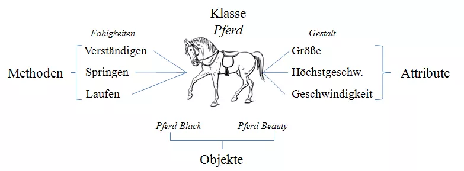

Vorlesung 1 – Sitzung vom 10.10.2022
Der ersten Vorlesung im Fach „Entwicklung verteilter Systeme“ habe ich
mit Freude entgegengeblickt, da ich meine ersten Berührungspunkte mit
Webdevelopment schon mit 13 Jahren hatte und mich seitdem in
regelmäßigen Abständen damit auseinander gesetzt habe.
Die erste Vorlesung ist wie immer am Anfang geprägt von einer
Vorstellungsrunde, einer groben Erläuterung der Themen, Literatur und
bisherigen Erfahrungen. Anschließend haben wir mehrere Optionen zur
Gestaltung der Prüfungsleistung bekommen, die bis zur nächsten Stunde
zwischen den Studenten diskutiert werden sollten.
Der inhaltliche Teil der Vorlesung begann mit einer generellen
Einführung ins Thema Programmieren bzw. Objektorientierte
Programmierung (OOP).
Was ist Objektorientierte Programmierung?
Alles in der objektorientierten Programmierung wird durch sogenannte Objekte dargestellt. Jedes „Ding“ oder „Teil“ in einem Projekt wird durch ein Objekt beschrieben. Die gekapselten Objekte sind wiederverwendbar und lassen sich einzeln und unabhängig bearbeiten.
Jedes Objekt besitzt Eigenschaften (auch als Attribute bezeichnet), die dazu dienen das Objekt zu beschreiben. Sie beziehen sich auf genau ein Objekt aus einer Objektgruppe. Diese wird als Klasse bezeichnet. Eine Klasse ist ein Bauplan für ein Objekt. Sie implementiert die verschiedenen Eigenschaften, die jedes Objekt der Klasse später aufweisen soll. Erst bei der Erstellung des Objekts werden den Attributen eines Objekts Werte zugewiesen. Außerdem hat jedes Objekt Methoden (Funktionen), durch die die Fähigkeiten dieses Objekts dargestellt werden. So erhalten Objekte eine gewisse Funktionalität.
Vorteile von OOP
Modularität: Durch die Kapselung können Objekte in sich geschlossen werden, wodurch die Fehlersuche und kollaborative Entwicklung einfacher wird Wiederverwendbarkeit: Jede Klasse und jede Methode kann so häufig wie nötig verwendet werden Generalisierung: Schon in der Phase des Entwurfs können Objekte klassifiziert und Gemeinsamkeiten festgestellt werden Vererbung: Hilft Programmierern Fehler zu vermeiden und Erlaubt die Nutzung vorgefertigter Klassen, Objekte und Methoden
Deployment einer Anwendung
Software Deployment bezeichnet einen (halb-)automatisch ablaufenden Prozess zur Verteilung von Software, speziell innerhalb von Unternehmen. Das Deployment umfasst die Installation, Konfiguration, Aktualisierung und Wartung von Betriebssystemen, Anwendungen oder Servern. Aufgabe des Deployments ist eine effiziente Ausgestaltung des betrieblichen IT-Management. Größere Firmen bedienen sich dabei meist einer zentralisierten Softwareverteilung. Das erfolgt über eigenständige Softwarelösungen oder Deployment-Skripte. Beides erfordert meist keine Interaktion durch den Nutzer des Systems. Für kleinere Organisationen kann auch ein einzelner Administrator oder ein geschulter Mitarbeiter die Installation und Verteilung durchführen. Alternativ kann ein fertiges Programm ebenfalls als Website zu Verfügung gestellt werden.
Vorteile
| Desktop-Anwendung | Web-Anwendung |
| Nicht auf dauerhaften Internetzugang angewiesen | Zugriff ist unabhängig vom benutzten System möglich |
| Bessere Zusammenarbeit zwischen Hard- und Software | Keine Einstiegsbarriere durch Installation |
| Vollständige Kontrolle über Datenspeicherung | Niedrigere Entwicklungs- und Wartungskosten |
Nachteile
| Desktop-Anwendung | Web-Anwendung |
| Eingeschränkt durch Hardware des Desktopsystems | Funktionierende Internetverbindung benötigt |
| Komplexere Installation | Größeres Risiko für Sicherheitslücken |
| Hohe Entwicklungskosten; Anwendung muss für jedes Betriebssystem individuell Entwickelt werden | Zusammenbruch des Systems bei zu vielen Anfragen/Sekunde |
| Hohe Wartungskosten; Aktualisierung muss auf jedem Gerät durchgeführt werden | Kompatibilität zwischen versch. Browsern benötigt |
Software Architektur von Webanwendungen
Geht es um Software Architektur wird zwischen Client- und
Server-seitiger Programmierung unterschieden. Zwischen diesen zwei
Implementationsformen wird für die Präsentations-, die Applikations-
und die Datenschicht entschieden.
Wird ein gesamtes System Server-seitig genannt, dann wird auf dem
Server ein Programm aufgerufen, das Daten aus einer Datenbank abruft.
Diese Daten werden dann in Form von HTML an den Client gesendet. Dabei
interagiert der Client nur mit dem Webserver, aber der Webserver
interagiert noch mit Java Servlets, CGI und PHP-Anwendungen. Es gibt
spezielle (Skript-)Sprachen, die sich für die Entwicklung eines
serverseitigen Systems besser eignen, bspw.: Perl, Python und PHP.
| Vorteile | Nachteile |
| Client muss die Clientseitige Ausführung von Programmcode nicht erlauben | Ausführung des Programmcodes erfolgt nur bei Aufruf der Website |
Ein System gilt als Client-seitig, wenn auch das Programm zum Abrufen der Daten (Bspw. ein JavaScript Programm) aus einer Datenbank auf dem Client läuft. Dabei interagiert der Client ebenfalls nur mit dem Webserver. Analog zu Serverseitigen Systemen gibt es (Skript-)Sprachen, die sich speziell für die Entwicklung Clientseitiger Systeme eignen, wie bspw.: JavaScript, Ajax oder Brython
| Vorteile | Nachteile |
| Technische Umgebung des Clients kann berücksichtigt werden | Verarbeitung des Programmcodes kann vom Client unterbunden werden |
In der Praxis wird die Client- und Serverseitige Verarbeitung meistens kombiniert.
Skriptsprachen
Das nächste Thema war Skriptsprachen, die mir in der Theorie aus den letzten Semestern bekannt, bisher aus der Praxis aber unbekannt waren. Das Wort Skript stammt aus dem 16. Jahrhundert von lateinisch scriptum à „das Geschriebene“ Eine Skriptsprache zeichnet sich durch die Verwendung eines Interpreters aus. Das heißt, dass der Quellcode bei jeder Ausführung neu übersetzt wird, so dass ein Binärcode nicht nötig ist. Dank dem Wegfall des Deklarationszwangs für Variablen ist eine Skriptsprache schneller erlernbar. Allerdings ist durch den Interpreter die Ausführungsgeschwindigkeit, im Gegensatz zu einer kompilierten Sprache, geringer. Beispiele für Skriptsprachen sind: JavaScript, PHP, Python und Perl.
JavaScript
JavaScript wird genutzt um dynamische Inhalte in Websiten einzubinden.
Ebenso nutzen Webentwickler die Funktion häufig, um Eingaben von
Benutzern zu verarbeiten. Üblicherweise wird JavaScript gemeinsam mit
HTML und der Stylesheet-Sprache CSS verwendet. JavaScript Dateien
haben die Endung „.js“. Diese Datei kann durch die
Verwendung der
<Script>-Tags eingebunden werden. Alternativ lässt
sich der Code direkt in den <Script>-Tags
ausführen. Die Besonderheit dabei ist, dass durch das sogenannte
Document Object Model (DOM) die eigentlich starren Elemente von HTML
flexibel verarbeitet und verändert werden können.
<script type="text/javascript">
// JavaScript code
</script>
Im Folgenden einige Beispiel-Funktionen von JavaScript:
<script type="text/javascript">
// Ausgabe eines Dialogfeldes auf der Website, mit "Hello, World!" als Nachricht.
// Sie kann mit 'ok' bestätigt werden.
alert('Hello, World!')
// JavaScript kann mit allen gängigen Rechenoperationen rechnen.
// Gleichzeitig wird hier die Variable 'x' deklariert.
// Ist eine Ausgabe gewünscht kann das mit alert(x) durchgeführt werden.
// Das Ergebnis ist 20.
x = 13 + 7
</script>
Wenn JavaScript nicht direkt beim Aufrufen der Website, sondern erst nach Interaktion durch den User, ausgeführt werden soll, kann bspw. ein Button benutzt werden.
<form>
<input type="button" value="Klick" onclick="alert('Hallo, Benutzer!')">
</form>
Wenn ein Endgerät JavaScript deaktiviert hat gibt es die Option mit
dem <noscript>-Tag eine Alternativwebseite oder
Alternativcode zur Verfügung zu stellen.